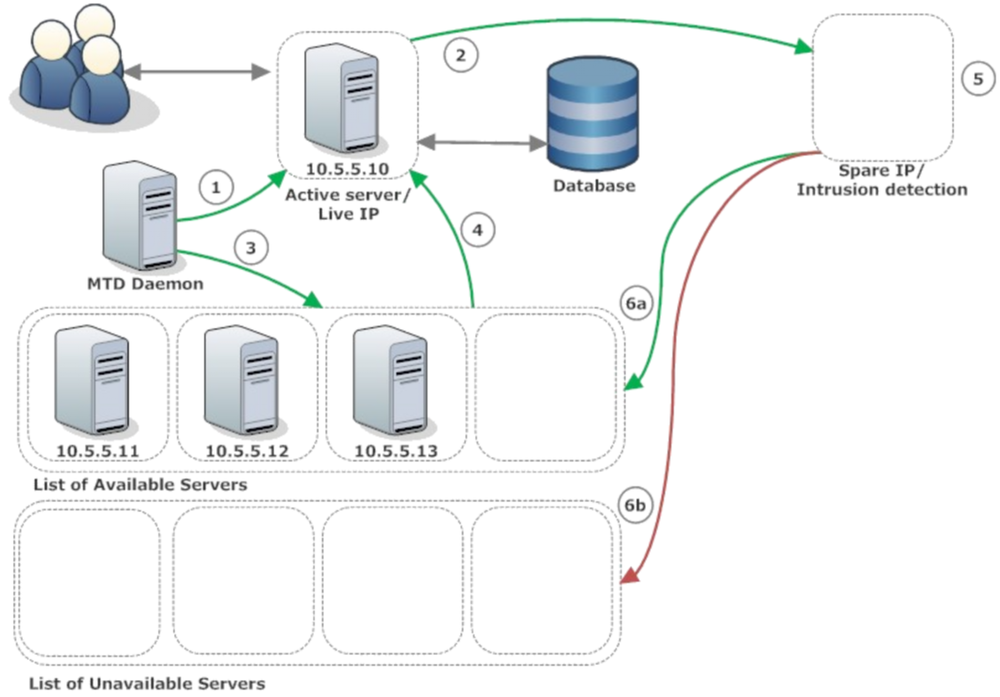
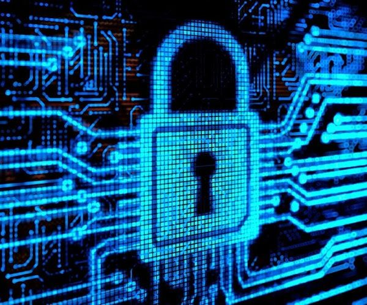

What does it do?
In this ever-expanding world, while technology is a key driver for growing societal and economic benefits, it also brings about new security challenges, through the never-ending attempts of prominent, re-emerging cybersecurity risks and threats, ‘hackers’. As of recent times, the world has provided some of the newest defense in the never-ending battle to protect the world from those unauthorized to access secured data. One notable development in the field is a new form of defense known as ‘moving target defense (MTD)’. It is a new concept that was created by the Department of Human Services (DHS) and finally has the chance to potentially give cyber defenders, the good guys, the upper hand against the war on cybersecurity.

MTD introduces a process, that constantly changes the attack surface across systems to increase uncertainty and complicate attacks. This creates confusion for those who are attempting to attack as they are now unable to target what they cannot see. MTD can be implemented in different ways, including via platforms or application code and data. However, where MTD promptly works is through the distribution of decoys, which can range from a false endpoint to servers and even Internet of things (IoT) devices.
The distribution of distractions constantly shifts the online environment, prompting attackers to question if the vulnerabilities they find are real or not, and even if the systems are real or a decoy. Having the ability to force attackers into questioning their attacks along the way slows down their end game and gives the defenders the advantage in being able to deal with, implement defenses, and seize any attack opportunities.
There is a similar approach, another take on this concept, that was developed by an Israeli company 'Morphisec' who have developed what they also refer to as an MTD. This works similarly in the way that the DHS' take on MTD does but instead of seeing the results through distraction distribution, they have taken the idea of being able to keep data moving and harder to pinpoint by scrambling the names, references, and locations of files in the server’s memory. This makes it incredibly difficult for cyber threats to attack maliciously and use malware to infect a system.
As an added security measure, and to reduce the likelihood of a successful attack even further, the moving target security was further developed, adding in a function that changes the scramble each time the computer is booted. This ensures that the system will never have the same file names or configuration as it did before making it even harder for breaches or attacks to occur. While both of these developments can reduce the need for threat detection, offer scalability, and a more level playing field, they need to be able to fit within any existing infrastructure which if not can leave possible back doors and vulnerabilities open. They are by no means a perfect way to completely stop attacks from happening, instead, they both work in a way that assumes attacks will continue to happen.

As it is better to work on the assumption that there is no perfect security measure, it is more beneficial to simply try to provide an advantage in making attempts at attacking more difficult where possible and can be seen as just one of many strategies that can be implemented as part of the wider scale defense in cybersecurity.
As well as these new strategies, in the next few years we can expect the industry to continue to grow, and with that more security challenges to arise as new technology such as 5G continues to be implemented, and other technological advances such as AI and Biometrics continue to hit the market on a global scale. These advances will have a huge impact on the way we look at and view security across the world and provide some amazing opportunities to create an even stronger defense than we have at present. The technology for AI and Biometrics can be seen already in the world but in terms of cybersecurity, however, is still in the works as it requires some very in-depth understanding of the impact and roles that both will play moving forwards.
What is the likely impact?
The potential impact of the new and emergent development in technology over the next few years will see criminals continue to try and seize what they can due to an increase in lack of understanding of how these technologies work. In turn the minds behind defending the digital future constantly needing to identify and understand the potential new risks in these new developments. All of this as well as continuing to see to it that our current cybersecurity landscape remains protected.
We will see millions of new devices that will be connected to the internet, posing many more opportunities than before for threats to attempt to steal what is not rightfully theirs. Advances such as AI and Biometrics whilst still being developed create both exciting opportunists in Cybersecurity defense and at the same time provide just as many risks and potential threats. Given the need for huge efficiencies in detection, the provision of situational awareness and real-time remediation of threats, automation, and AI-driven solutions are the future of Cybersecurity.
 However as previous Cybercrime has shown us, the advances in any technological development in AI have significant fallbacks as they are usually quickly seized upon and exploited by the criminals. Whilst AI is something that we will need with future advances, it is not something that we can just openly hand over to the criminal community.
However as previous Cybercrime has shown us, the advances in any technological development in AI have significant fallbacks as they are usually quickly seized upon and exploited by the criminals. Whilst AI is something that we will need with future advances, it is not something that we can just openly hand over to the criminal community.
Such the same can be seen for Biometrics, being thought of by experts as the 3rd factor in authentication. The opportunity is there to create and run something phenomenal, but to do so would require the data of an individual to be stored globally and will drive cybercriminals to target these high volumes of data. These advances in technology for the current time and over the next few years will, I believe, create more available jobs.
Those that are in charge of defending our digital future, will continue to need assistance as our drive for societal and economic growth brings the need for a greater understanding of how the security community believes the cyberthreat will change with technological advancement. AI for one will never be able to replace an analyst's insight and understanding of the field as without this we cannot move forward to an all automated procedure/strategy due to the potential for risks and attacks being too high.
How will this affect you?
IIn our daily life, we have no idea how any of these will affect us, but as for our friends and family, some concerns could be raised. We can only hope that with the continued development, research, and understanding that we as a society do not need to follow suit of other countries and begin to monitor, restrict and ban certain applications and websites. If this were to happen it would then affect our life's, in limiting our ability to do such daily tasks as browsing the internet, using Facebook, or potentially even what emails we can send.
This would also be an issue for those around us, close friends, family, and society ultimately. We would like to see and believe there is a future in which technological advances will make our lives better, rather than worse off, with more fulfillment, opportunities, and protected information/privacy. However we also realize that with this, there is a possibility that to achieve this, we as a society may need to be monitored and analyzed more so than ever through technological advances, should the need to ever arise.
It also raises the question of safety as if the good guys, the ones who are employed to protect us, our society, have access to these measures, what does it mean should these accesses ever fall into the hands of attackers? We would assume that is always going to be a fallback with any new concept, idea, or implementation. Hackers are becoming increasingly innovative with the techniques they use to access sensitive data.
In many cases, new technologies that have just hit the market are helpful to hackers, who take advantage of people’s lack of understanding of how those technologies work. Threats will always remain active and more prominent than ever, so long as there is confidential information being used and stored throughout the world.